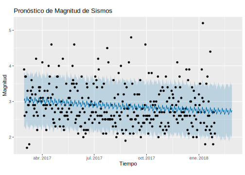
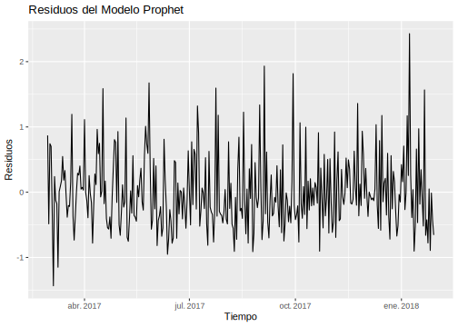
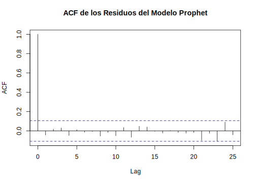

7.1 Magnitud
## Cargando paquete requerido: Rcpp## Cargando paquete requerido: rlanglibrary(ggplot2)
library(forecast)
# Asumiendo que los datos están en un data.frame llamado sismo
# Convertir las fechas y profundidades en un formato adecuado para Prophet
data_magnitud <- data.frame(
ds = as.Date(sismo_4_max_completo_filtrado$FECHA),
y = sismo_4_max_completo_filtrado$MAX_MAGNITUD_ML
)
# Quitar los últimos 30 días de los datos
train_data_magnitud <- head(data_magnitud, -30)
# Ajustar el modelo Prophet con los datos de entrenamiento
modelo_magnitud_prophet <- prophet(train_data_magnitud)## Disabling yearly seasonality. Run prophet with yearly.seasonality=TRUE to override this.## Disabling daily seasonality. Run prophet with daily.seasonality=TRUE to override this.# Hacer predicciones para los próximos 30 días
future <- make_future_dataframe(modelo_magnitud_prophet, periods = 30)
pronostico_magnitud_prophet <- predict(modelo_magnitud_prophet, future)
# Graficar las predicciones
plot(modelo_magnitud_prophet, pronostico_magnitud_prophet) +
labs(title = "Pronóstico de Magnitud de Sismos", y = "Magnitud", x = "Tiempo") La línea azul central representa la predicción del modelo, mientras que las áreas sombreadas en azul claro y oscuro indican los intervalos de confianza del 80% y 95%, respectivamente. Los puntos negros representan las observaciones reales de la magnitud de los sismos durante el período de tiempo mostrado. La mayoría de las observaciones se encuentran dentro de los intervalos de confianza, lo que sugiere que el modelo tiene un buen desempeño en capturar la variabilidad de las magnitudes de los sismos.
# Calcular los residuos
residuales_magnitud_prophet <- data_magnitud$y[1:nrow(train_data_magnitud)] - pronostico_magnitud_prophet$yhat[1:nrow(train_data_magnitud)]
# Test de Shapiro-Wilk para normalidad de los residuos
shapiro_test <- shapiro.test(residuales_magnitud_prophet)
print(shapiro_test)##
## Shapiro-Wilk normality test
##
## data: residuales_magnitud_prophet
## W = 0.95033, p-value = 3.206e-09# Test de Box-Ljung para independencia de los residuos
box_ljung_test <- Box.test(residuales_magnitud_prophet, lag = 20, type = "Ljung-Box")
print(box_ljung_test)##
## Box-Ljung test
##
## data: residuales_magnitud_prophet
## X-squared = 7.869, df = 20, p-value = 0.9927# Graficar los residuos
residuals_df <- data.frame(time = train_data_magnitud$ds, residuals = residuales_magnitud_prophet)
ggplot(residuals_df, aes(x = time, y = residuals)) +
geom_line() +
labs(title = "Residuos del Modelo Prophet", x = "Tiempo", y = "Residuos")
# Graficar la función de autocorrelación de los residuos
acf(residuales_magnitud_prophet, main = "ACF de los Residuos del Modelo Prophet")
La gráfica que muestra la función de autocorrelación (ACF) de los residuos, indica que casi todos los valores de autocorrelación están dentro de las bandas de confianza, sugiriendo que no hay autocorrelación significativa en los residuos y que el modelo ha capturado adecuadamente las dependencias temporales en los datos. La segunda gráfica, que muestra la serie temporal de los residuos, muestra que los residuos están distribuidos alrededor de cero con algunas fluctuaciones pero sin patrones evidentes de autocorrelación. Por su parte, el test de Box-Ljung muestra que los residuos son independientes, lo que indica que el modelo Prophet ha capturado adecuadamente las dependencias temporales en los datos.